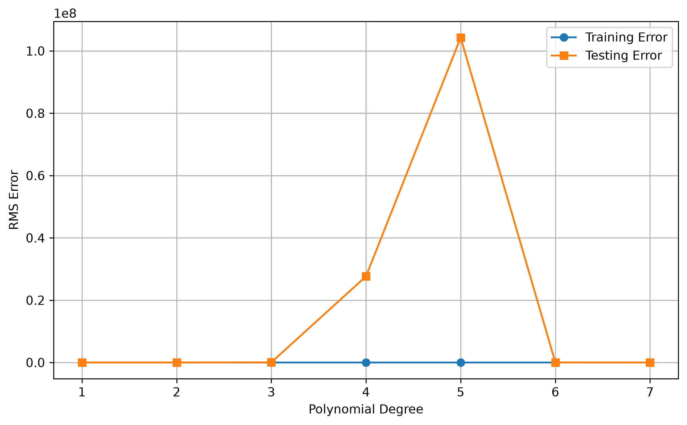
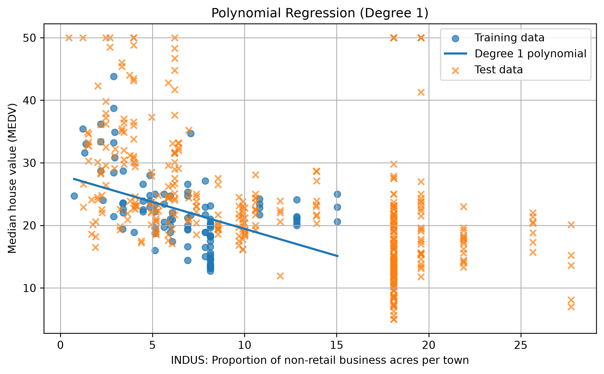
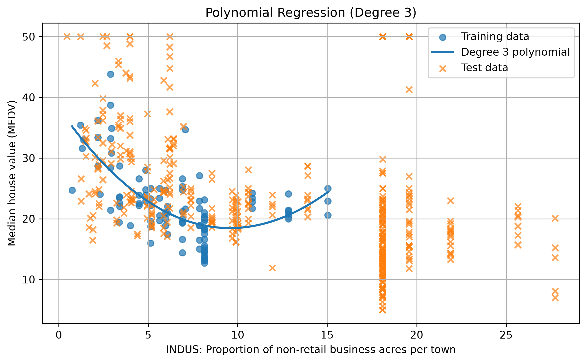
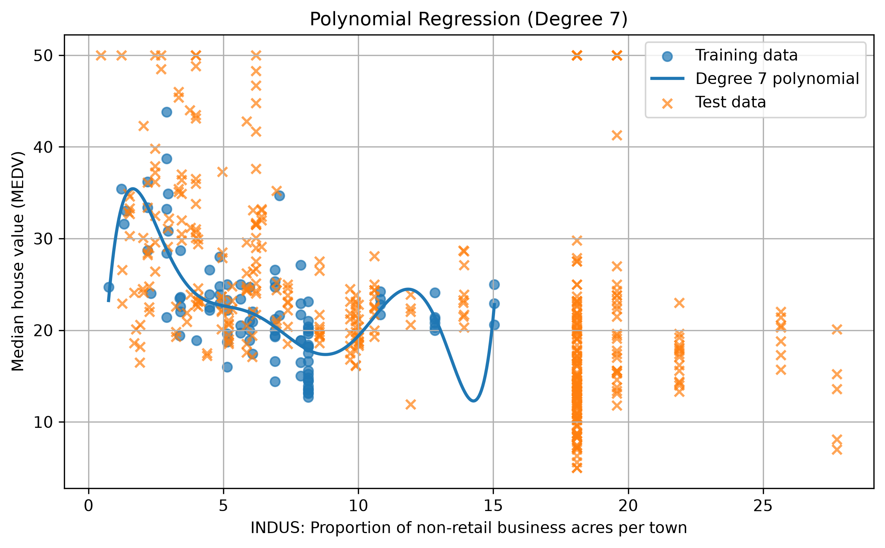
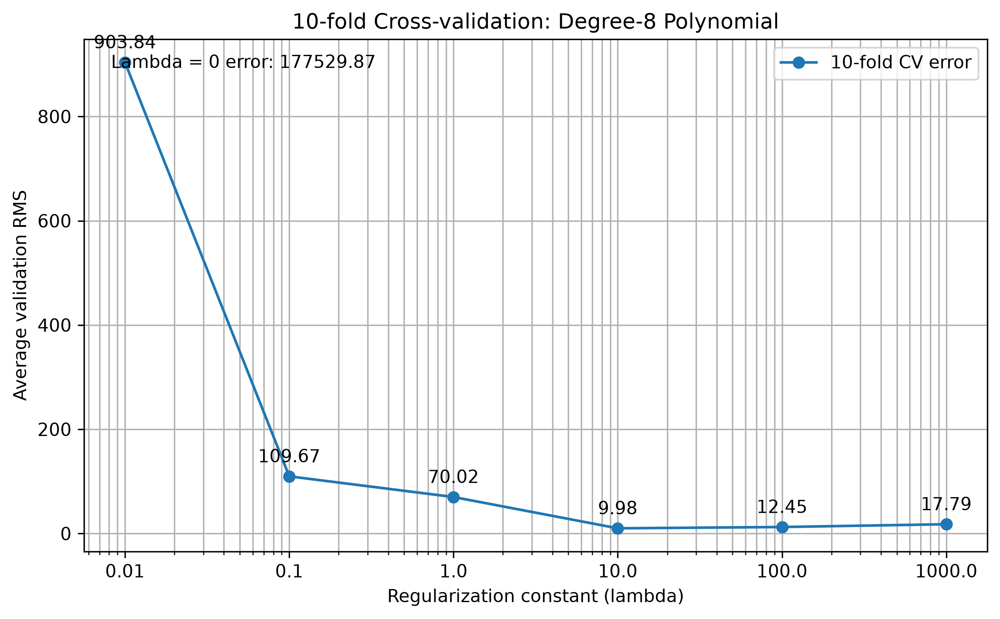
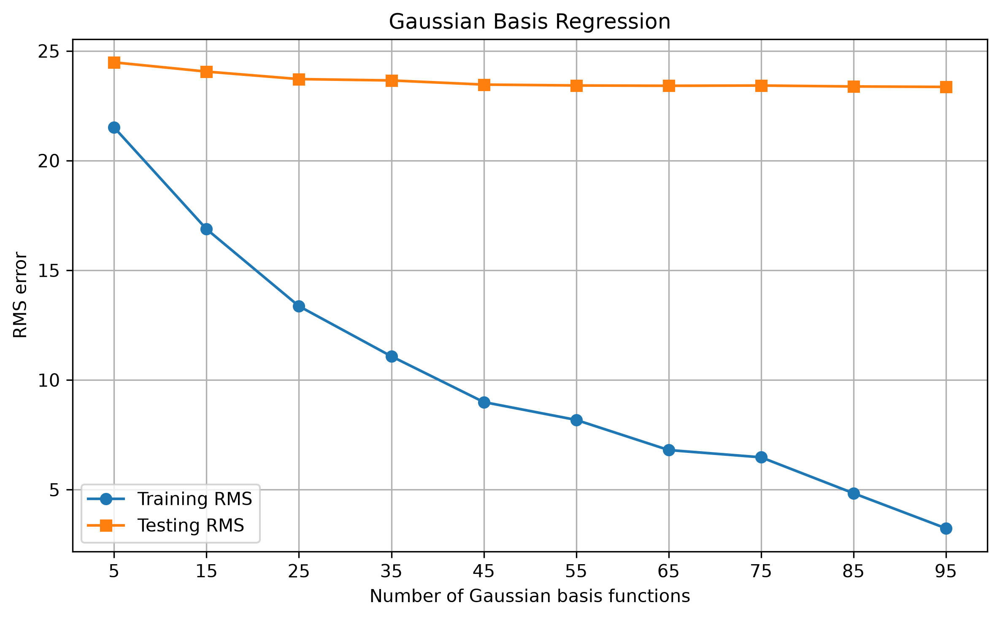
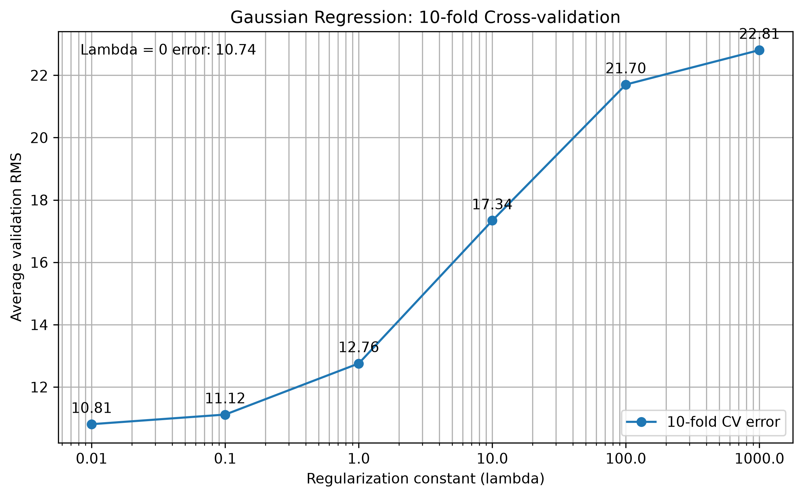

Polynomial regression and Gaussian basis function regression

Comment: Training RMS generally decreases as polynomial degree increases at first. However, the testing RMS becomes extremely large and fluctuates substantially. This indicates poor generalization at higher degrees and may also indicate numerical instability because raw feature values are raised to high powers.
The fitted degree-1 model produced the following weights, with the bias first:
[-37.9042, -3.4559, 0.005382, -0.168779, approximately 0, 21.5154, 8.5910, -0.079237, 0.007627, -0.139906, -0.007630, 0.154556, 0.006645, 0.026230]
The following figures show the fitted polynomial and the training and testing points for the degrees evaluated. The images are expected to be in the existing fig folder.



Comment: The fitted curve becomes more flexible as the polynomial degree increases. Higher-degree curves can fit the training points more closely, but may fluctuate more and generalize less reliably to unseen data.

Comment: The lowest average validation RMS was 9.9839, at λ = 10. Therefore, λ = 10 is selected for the degree-8 polynomial model based on these cross-validation results. The very large unregularized error suggests the model is unstable without regularization.

Comment: Training RMS decreases from 21.5121 with 5 basis functions to 3.2385 with 95 basis functions. Testing RMS decreases only slightly, from 24.4771 to 23.3589. Thus, adding basis functions improves the fit to the training data, while test performance improves only modestly.

Comment: The lowest average validation RMS was 10.7364, at λ = 0. Therefore, cross-validation selects the unregularized model for this configuration. In this experiment, increasing the regularization constant increased validation error.